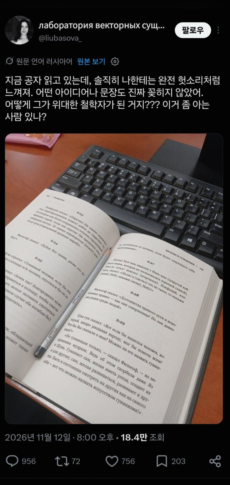
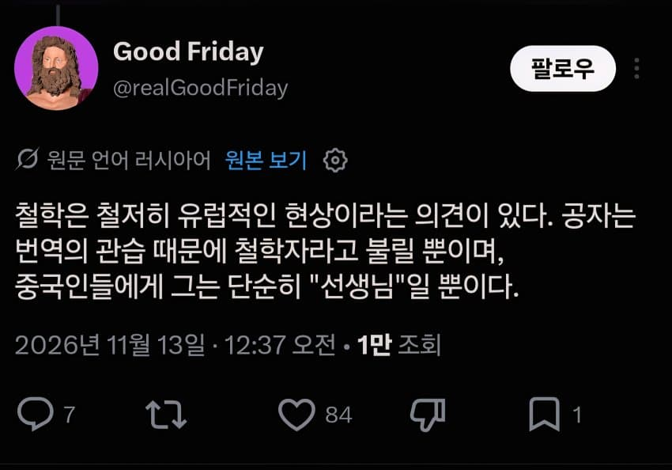
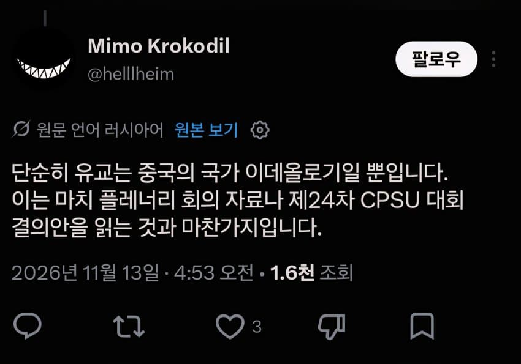
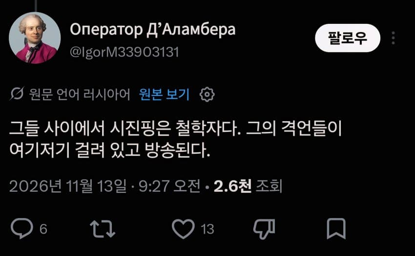
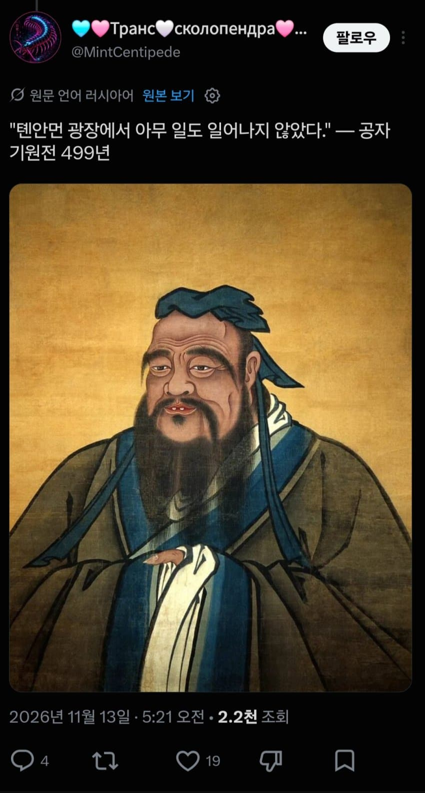
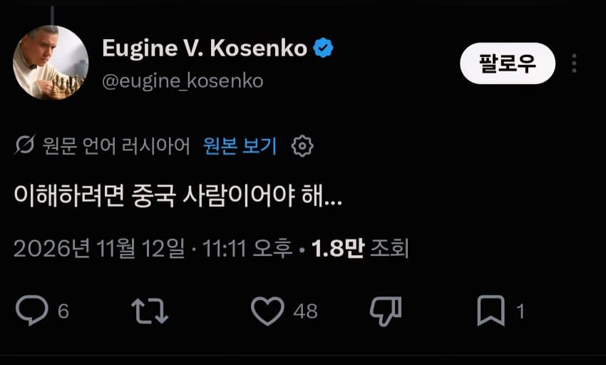
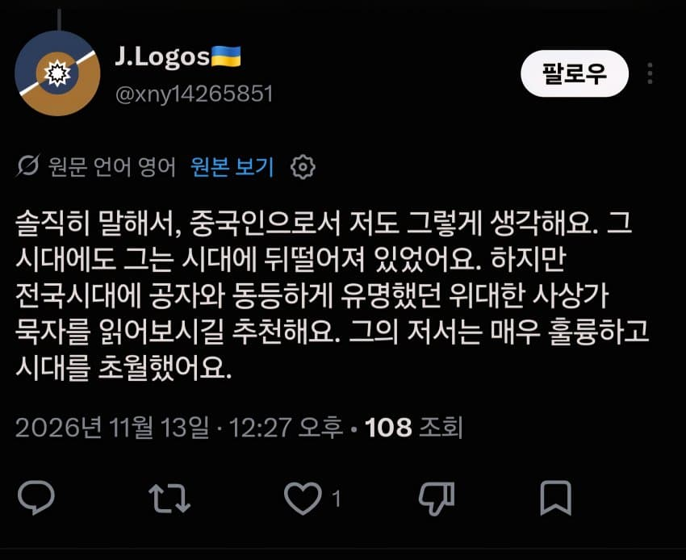
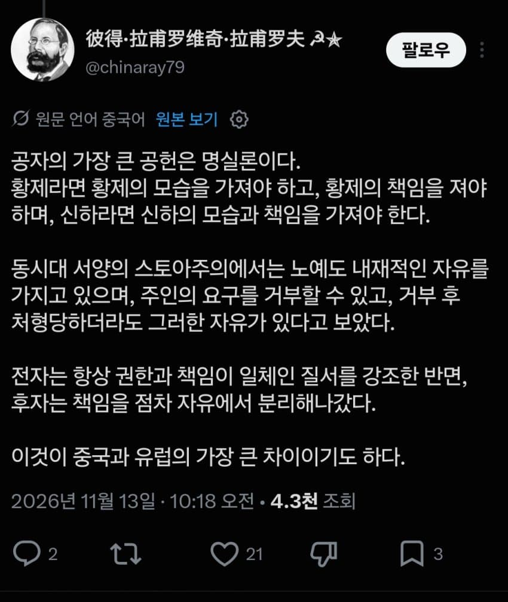

헉

공자는 애초에 철학자가 아니기 때문에
철학을 기대하고 읽으면 안된다고 함




하긴 똥양인인 나한테도 별로 안 와닿는 게 공잔데
러시아인 입장에선 거의 아무 감명도 없을 듯


따거들의 의견
- dc official App








댓글
수집 당시 댓글 856개
· つついあやめのおっと · 11.14 13:51:36
ㅇㅇ · 11.14 10:14:47
ㅇㅇ · 11.14 10:19:23
ㄴㅇㄹㅇㄴ · 11.14 10:22:50
· ㅇㅇ · 11.14 10:28:14
· 소세지 · 11.14 10:36:22
· ㅇㅇ · 11.14 18:40:52
ㅇㅇ · 11.14 10:30:00
· つついあやめのおっと · 11.14 10:44:49
미쳐 · 11.14 10:48:56
ㅇㅇ · 11.14 10:55:30
· 닉변중 · 11.14 13:04:13
ㅇㅇ · 11.14 11:03:22
· ㅇㅇ · 11.14 13:20:53
· ㅇㅇ · 11.14 18:11:17
ㅇㅇ · 11.14 11:04:24
· ㅇㅇ · 11.14 12:06:02
ㅇㅇ · 11.14 11:06:33
ㅇㅇ · 11.14 11:09:13
ㅇㅇ · 11.14 11:15:10
ㅇㅇ · 11.14 11:26:12
· つついあやめのおっと · 11.14 11:41:16
· ㅇㅇ · 11.14 18:12:26
고소 · 11.14 11:28:38
Cyclic · 11.14 11:31:15
ㅎㅎ · 11.14 11:31:59
ㅇㅇ · 11.14 11:38:33
ㅇㅇ · 11.14 11:40:30
ㅇㅇ · 11.14 12:03:24
ㅇㅇ · 11.14 12:08:07
· ㅇㅇ · 11.14 12:24:21
· ㅇㅇ · 11.14 12:39:57
· kzine · 11.14 17:15:50
· 리코타 · 11.14 17:27:36
ㅇㅇ · 11.14 12:19:02
ㅇㅇ · 11.14 12:20:12
· ㅇㅇ · 11.14 12:23:04
ㅇㅇ · 11.14 12:22:26
ㅇㅇ · 11.14 12:29:38
ㅇㄷ · 11.14 12:35:02
ㅇㅇ · 11.14 12:38:28
ㅇㅇ · 11.14 12:39:25
ㅇㅇ · 11.14 12:54:48
· ㅇㅇ · 11.14 12:54:55
· ㅇㅇ · 11.14 12:54:59
· ㅇㅇ · 11.14 12:55:23
· ㅇㅇ · 11.14 12:55:32
· ㅇㅇ · 11.14 16:29:13
00 · 11.14 13:07:29
· ㅇㅇ · 11.14 13:16:47
ㅇㅇ · 11.14 13:20:01
· つついあやめのおっと · 11.14 14:18:23
· つついあやめのおっと · 11.14 14:21:19
페 럳 · 11.14 13:32:25
· ㅇㅇ · 11.14 13:41:44
ㅇㅇ · 11.14 13:41:20
설사킹 · 11.14 13:46:54
· ㅇㅇ · 11.14 14:17:41
<:)~ · 11.14 14:01:46
ㅇㅇ · 11.14 14:06:53
· ㅇㅇ · 11.14 15:47:17
China
69mm
Dick
kawa · 11.14 14:13:28
ㅇㅇ · 11.14 14:19:12
· ㅇㅇ · 11.14 18:10:11
ㅇㅇ · 11.14 14:19:15
ㅇㅇ · 11.14 14:29:58
ㅇㅇ · 11.14 14:44:30
ㅇㅇ · 11.14 14:53:17
o o · 11.14 15:03:04
ㅇㅇ · 11.14 15:09:38
· ㅇㅇ · 11.14 15:10:18
ㅇㅅㅇ · 11.14 15:09:57
ㅇㅇ · 11.14 15:10:45
ㅇㅇ · 11.14 15:29:25
ㅇㅇ · 11.14 15:32:41
ㄱㄱㄱㄱㄱ · 11.14 15:39:02
VWVWV · 11.14 15:39:43
ㅇㅇ · 11.14 15:42:34
ㅇㅇ · 11.14 15:45:15
ㅇㅇ · 11.14 16:27:40
ㅇㅇ · 11.14 16:51:17
· ㅇㅇ · 11.14 16:51:40
ㄱㅂㅈㄱㄷ · 11.14 16:56:13
리코타 · 11.14 17:18:22
· 리코타 · 11.14 17:18:38
ㅇㅇ · 11.14 17:19:08
ㅇㅇ · 11.14 17:31:18
ㅇㅇ · 11.14 17:31:22
ㅇㅇ · 11.14 17:53:29
ㅇㅇ · 11.14 17:58:10
ㅇㅇ · 11.14 18:00:56
ㅇㅇ · 11.14 18:05:51
· ㅇㅇ · 11.14 18:06:33
· ㅇㅇ · 11.14 18:07:06
· ㅇㅇ · 11.14 18:09:27
ㅇㅇ · 11.14 18:12:25
· ㅇㅇ · 11.14 18:14:54
ㅇㅇ · 11.14 18:24:33
ㅇㅇ · 11.14 18:39:04
ㅇㅇ · 11.14 18:49:56
· ㅇㅇ · 11.14 08:47:40
· ㅇㅇ · 11.14 08:48:07
ㅇㅇ · 11.14 08:42:50
ㅇㅇ · 11.14 08:43:03
· ㅇㅇ · 11.14 08:48:21
ㅇㅇ · 11.14 08:45:25
· つついあやめのおっと · 11.14 10:08:54
ㅇㅇ · 11.14 08:46:46
ㅇㅇ · 11.14 08:47:14
ㅇㅇ · 11.14 08:47:25
· ㅇㅇ · 11.14 08:47:36
· ㅇㅇ · 11.14 08:47:52
· ㅇㅇ · 11.14 08:48:08
· ㅇㅇ · 11.14 08:48:22
· ㅇㅇ · 11.14 08:48:55
· ㅇㅇ · 11.14 08:50:43
ㅇㅇ · 11.14 08:47:34
· ㅇㅇ · 11.14 08:49:12
ㅇㅇ · 11.14 08:50:37
· ㅇㅇ · 11.14 08:51:37
· ㅇㅇ · 11.14 08:52:18
· ㅇㅇ · 11.14 08:52:41
· ㅇㅇ · 11.14 08:54:45
ㅇㅇ · 11.14 08:53:37
ㅇㅇ · 11.14 08:54:03
· ㅇㅇ · 11.14 08:54:43
ㅇㅇ · 11.14 08:56:52
· ㅇㅇ · 11.14 08:59:14
· ㅇㅇ · 11.14 09:42:43
케떡 · 11.14 08:56:55
ㅇㅇ · 11.14 08:58:13
· ㅇㅇ · 11.14 09:06:50
ㅇㅇ · 11.14 08:58:53
· ㅇㅇ · 11.14 09:00:12
ㅇㅇ · 11.14 08:59:02
· ㅇㅇ · 11.14 13:10:07
빠빠 · 11.14 09:00:08
元좆본 · 11.14 09:00:12
ㅇㅇ · 11.14 09:01:43
· ㅇㅇ · 11.14 10:31:03
ㅇㅇ · 11.14 09:04:45
ㅇㅇ · 11.14 09:04:51
· ㅇㅇ · 11.14 09:06:35
ㅇㅇ · 11.14 09:05:55
ㅇㅇ · 11.14 09:09:10
ㅇㅇ · 11.14 09:11:34
ㅇㅇ · 11.14 09:12:14
· ㅇㅇ · 11.14 12:32:51
ㅇㅅㅇ · 11.14 09:12:23
· ㅇㅇ · 11.14 09:22:45
· ㅇㅇ · 11.14 10:32:25
qkfpt · 11.14 09:12:34
해갤러 · 11.14 09:14:31
· ㅇㅇ · 11.14 11:05:18
ㅇㅇ · 11.14 09:17:14
· ㅇㅇ · 11.14 10:35:18
· ㅇㅇ · 11.14 11:03:38
· ㅇㅇ · 11.14 11:05:55
· ㅇㅇ · 11.14 12:55:01
ㅇㅇ · 11.14 09:18:20
· ㅇㅇ · 11.14 09:21:43
· ㅇㅇ · 11.14 12:57:16
· ㅇㅇ · 11.14 13:13:46
ㅇㅇ · 11.14 09:21:11
ㅇㅇ · 11.14 09:22:49
해갤러 · 11.14 09:25:03
ㅇㅇ · 11.14 09:27:03
Doll · 11.14 09:27:44
ㅇㅇ · 11.14 09:35:11
ㅇㅇ · 11.14 09:40:43
· ㅇㅇ · 11.14 11:07:10
ㅇㅇ · 11.14 09:42:52
ㅇㅇ · 11.14 09:43:06
· ㅇㅇ · 11.14 10:36:44
해갤러 · 11.14 09:44:19
ㅇㅇ · 11.14 09:53:24
· ㅇㅇ · 11.14 16:51:33
ㅇㅇ · 11.14 09:54:15
· ㅇㅇ · 11.14 12:04:15
ㅇㅇ · 11.14 09:59:57
· つついあやめのおっと · 11.14 10:16:03
· つついあやめのおっと · 11.14 10:18:37
· つついあやめのおっと · 11.14 10:25:59
· つついあやめのおっと · 11.14 10:28:40
· ㅇㅇ · 11.14 11:10:41
· つついあやめのおっと · 11.14 11:18:11
ㅇㅇ · 11.14 10:04:08
ㅇㅇ · 11.14 10:09:30
ㅇㅇ · 11.14 10:11:21
つついあやめのおっと · 11.14 10:11:45
· ㅇㅇ · 11.14 10:42:59
· つついあやめのおっと · 11.14 10:48:20
· ㅇㅇ · 11.14 10:54:31
· つついあやめのおっと · 11.14 10:55:24
· ㅇㅇ · 11.14 11:01:08
· つついあやめのおっと · 11.14 11:11:29
· ㅇㅇ · 11.14 13:22:02
· つついあやめのおっと · 11.14 13:29:59
· ㅇㅇ · 11.14 13:35:21
· つついあやめのおっと · 11.14 13:48:14
ㅇㅇ · 11.14 07:58:46
· ㅇㅇ · 11.14 08:57:08
· ㅇㅇ · 11.14 09:01:31
ㅇㅇ · 11.14 08:01:50
ㅇㅇ · 11.14 08:01:55
ㅇㅇ · 11.14 08:02:11
· ㅇㅇ · 11.14 08:18:40
ㅇㅇ · 11.14 08:02:11
· ㅇㅇ · 11.14 08:06:52
· ㅇㅇ · 11.14 08:10:06
ㅇㅇ · 11.14 08:04:19
· ㅇㅇ · 11.14 08:04:41
· ㅇㅇ · 11.14 08:25:38
ㅁㄴㅇㄹ · 11.14 08:04:30
폴신짱짱맨 · 11.14 08:07:44
깨시민 · 11.14 08:08:28
· 깨시민 · 11.14 08:09:04
· 깨시민 · 11.14 08:11:21
· ㅇㅇ · 11.14 08:33:14
ㅇㅇ · 11.14 08:09:07
ㅇㅇ · 11.14 08:10:02
ㅇㅇ · 11.14 08:11:01
ㅇㅇ · 11.14 08:11:51
· ㅇㅇ · 11.14 08:14:39
ㅇㅇ · 11.14 08:12:13
· 깨시민 · 11.14 08:13:38
· 깨시민 · 11.14 08:14:24
· ㅇㅇ · 11.14 08:15:12
Zintp_찐팁 · 11.14 08:13:45
ㅇㅇ · 11.14 08:13:46
· ㅇㅇ · 11.14 09:03:19
ㅇㅇ · 11.14 08:13:59
ㅇㅇ · 11.14 08:14:42
· ㅇㅇ · 11.14 08:23:11
ㅇㅇ · 11.14 08:15:28
ㅇㅇ · 11.14 08:16:01
ㅇㅇ · 11.14 08:16:54
· ㅇㅇ · 11.14 09:03:58
ㅇㅇ · 11.14 08:17:42
· ㅇㅇ · 11.14 08:20:27
· ㅇㅇ · 11.14 08:22:23
· ㅇㅇ · 11.14 08:24:00
· ㅇㅇ · 11.14 08:26:06
· ㅇㅇ · 11.14 08:26:53
· ㅇㅇ · 11.14 08:28:31
· ㅇㅇ · 11.14 08:43:35
· ㅇㅇ · 11.14 08:57:35
· ㅇㅇ · 11.14 09:13:42
ㅇㅇ · 11.14 08:18:16
· ㅇㅇ · 11.14 08:38:58
ㅇㅇ · 11.14 08:18:19
ㅇㅇ · 11.14 08:19:50
· ㅇㅇ · 11.14 08:23:25
· ㅇㅇ · 11.14 08:34:06
· ㅇㅇ · 11.14 08:40:00
· 케떡 · 11.14 09:09:50
ㅇㅇ · 11.14 08:20:16
ㅇㅇ · 11.14 08:22:22
ㅇㅇ · 11.14 08:23:10
ㅇㅇ · 11.14 08:23:15
ㅇㅇ · 11.14 08:23:37
ㅇㅇ · 11.14 08:23:47
· 폴신짱짱맨 · 11.14 08:28:15
미치타 · 11.14 08:24:36
· ㅇㅇ · 11.14 08:37:27
ㅇㅇ · 11.14 08:25:37
· ㅇㅇ · 11.14 08:44:38
· ㅇㅇ · 11.14 08:44:49
· ㅇㅇ · 11.14 08:45:37
· 패배머신 · 11.14 09:57:01
ㅇㅇ · 11.14 08:26:05
ㅇㅇ · 11.14 08:26:36
ㅇㅇ · 11.14 08:28:44
ㅇㅇ · 11.14 08:29:16
· ㅇㅇ · 11.14 08:30:23
· ㅇㅇ · 11.14 08:31:59
· ㅇㅇ · 11.14 08:32:20
ㅇㅇ · 11.14 08:30:12
· ㅇㅇ · 11.14 08:33:14
· ㅇㅇ · 11.14 08:35:31
더블알발음은아르르 · 11.14 08:30:31
ㅇㅇ · 11.14 08:31:49
· ㅇㅇ · 11.14 08:32:06
· ㅇㅇ · 11.14 08:33:30
· ㅇㅇ · 11.14 08:34:08
· ㅇㅇ · 11.14 08:35:29
ㅇㅇ · 11.14 08:32:01
ㅇㅇ · 11.14 08:32:40
... · 11.14 08:33:03
· ㅇㅇ · 11.14 08:37:46
ㅇㅇ · 11.14 08:36:36
ㅇㅇ · 11.14 08:36:41
· ... · 11.14 08:38:04
· ㅇㅇ · 11.14 08:46:47
· ㅇㅇ · 11.14 08:47:09
· ㅇㅇ · 11.14 08:48:50
· ㅇㅇ · 11.14 08:50:49
· ㅇㅇ · 11.14 09:01:50
ㅇㅇ · 11.14 08:37:17
ㅇㅇ · 11.14 08:39:56
· ㅇㅇ · 11.14 08:26:16
ㅇㅇ · 11.14 07:22:44
そうだね · 11.14 07:26:46
· ㅇㅇ · 11.14 07:40:56
· ㅇㅇ · 11.14 08:58:18
ㅇㅇ · 11.14 07:26:57
좆자 올려치기 된 건 팩트지
ㅋㅋ · 11.14 07:27:50
ㅇㅇ · 11.14 07:27:56
ㅇㅇ · 11.14 07:28:37
· ㅇㅇ · 11.14 07:28:49
ㅇㅇ · 11.14 07:30:14
ㅇㅇ · 11.14 07:30:55
· ㅇㅇ · 11.14 07:32:37
· ㅇㅇ · 11.14 07:41:01
ㅇㅇ · 11.14 07:31:04
· ㅇㅇ · 11.14 07:46:38
· ㅇㅇ · 11.14 07:49:52
· ㅇㅇ · 11.14 08:22:01
마인츠05 · 11.14 07:31:33
ㅇㅇ · 11.14 07:31:56
ㅇㅇ · 11.14 07:32:29
· ㅇㅇ · 11.14 08:53:56
ㅇㅇ · 11.14 07:33:09
ㅇㅇ · 11.14 07:33:18
ㅇㅇ · 11.14 07:33:18
· 주식용 · 11.14 07:34:35
ㅇㅇ · 11.14 07:34:53
마인츠05 · 11.14 07:38:07
· 마인츠05 · 11.14 07:38:13
ㅇㅇ · 11.14 07:39:17
마인츠05 · 11.14 07:39:28
· 마인츠05 · 11.14 07:40:36
· 마인츠05 · 11.14 07:40:53
· 마인츠05 · 11.14 07:41:00
ㅇㅇ · 11.14 07:39:46
· 돌아온애우 · 11.14 07:41:15
· 돌아온애우 · 11.14 07:41:32
· ㅇㅇ · 11.14 07:43:09
· 돌아온애우 · 11.14 07:44:46
· ㅇㅇ · 11.14 07:45:32
· 돌아온애우 · 11.14 07:45:37
· 00 · 11.14 08:27:44
· 00 · 11.14 08:29:39
· ㅇㅇ · 11.14 08:33:55
· ㅇㅇ · 11.14 08:54:48
· ㅇㅇ · 11.14 08:55:37
ㅇㅇ · 11.14 07:40:03
· ㅇㅇ · 11.14 07:45:49
ㅇㅇ · 11.14 07:44:36
· 마유미 · 11.14 07:48:29
· ㅇㅇ · 11.14 07:51:17
· ㅇㅇ · 11.14 08:33:16
ㅇㅇ · 11.14 07:47:26
· ㅇㅇ · 11.14 08:56:14
· ㅇㅇ · 11.14 09:43:28
잡붕이 · 11.14 07:48:46
· ㅇㅇ · 11.14 07:53:34
ㅇㅇ · 11.14 07:51:24
· ㅇㅇ · 11.14 08:01:23
ㅇㅇ · 11.14 07:51:29
· ㅇㅇ · 11.14 07:54:31
ㅇㅇ · 11.14 07:51:39
ㅇㅇ · 11.14 07:54:07
리로레인 · 11.14 07:54:10
· 마인츠05 · 11.14 07:55:11
· ㅇㅇ · 11.14 07:56:41
· ㅇㅇ · 11.14 08:00:00
· 리로레인 · 11.14 08:03:13
· 리로레인 · 11.14 08:04:29
· ㅇㅇ · 11.14 08:08:51
· 리로레인 · 11.14 08:10:27
· ㅇㅇ · 11.14 08:12:54
· ㅇㅇ · 11.14 08:13:55
ㅇㅇ · 11.14 07:54:41
· ㅇㅇ · 11.14 07:56:55
· ㅇㅇ · 11.14 08:00:47
· ㅇㅇ · 11.14 08:04:22
· ㅇㅇ · 11.14 08:15:22
· ㅇㅇ · 11.14 08:15:29
· ㅇㅇ · 11.14 08:16:59
· ㅇㅇ · 11.14 08:17:46
· ㅇㅇ · 11.14 08:25:23
· ㅇㅇ · 11.14 08:27:12
· ㅇㅇ · 11.14 08:27:38
· ㅇㅇ · 11.14 08:29:25
· ㅇㅇ · 11.14 08:29:41
· ㅇㅇ · 11.14 08:35:06
· ㅇㅇ · 11.14 08:36:18
· ㅇㅇ · 11.14 08:37:06
· ㅇㅇ · 11.14 08:37:40
· ㅇㅇ · 11.14 08:37:58
· ㅇㅇ · 11.14 08:38:49
· ㅇㅇ · 11.14 08:38:58
· ㅇㅇ · 11.14 08:40:27
ㅇㅇ · 11.14 07:56:19
· ㅇㅇ · 11.14 08:18:33
· ... · 11.14 08:36:43
· ㅇㅇ · 11.14 08:39:59
· ㅇㅇ · 11.14 08:42:20
ㅇㅇ · 11.14 07:56:56
· ㅇㅇ · 11.13 21:50:28
· ㅇㅇ · 11.13 21:52:33
· ㅇㅇ · 11.13 21:52:59
· ㅇㅇ · 11.13 21:56:05
· ㅇㅇ · 11.13 21:57:55
· ㅇㅇ · 11.13 22:01:36
· ㅇㅇ · 11.13 22:01:47
· ㅇㅇ · 11.13 22:05:06
· ㅇㅇ · 11.13 22:07:40
· ㅇㅇ · 11.13 22:11:40
· ㅇㅇ · 11.13 22:13:52
· ㅇㅇ · 11.13 22:13:58
· ㅇㅇ · 11.13 22:20:08
· ㅇㅇ · 11.13 22:20:21
· ㅇㅇ · 11.13 22:23:55
· ㅇㅇ · 11.13 22:27:27
· ㅇㅇ · 11.13 22:27:57
· ㅇㅇ · 11.13 22:29:51
· ㅇㅇ · 11.13 22:32:14
· ㅇㅇ · 11.13 22:34:10
· ㅇㅇ · 11.13 22:36:46
· ㅇㅇ · 11.13 22:37:43
· ㅇㅇ · 11.13 22:41:07
· ㅇㅇ · 11.13 22:45:02
· ㅇㅇ · 11.13 22:46:04
· ㅇㅇ · 11.13 22:46:21
· ㅇㅇ · 11.13 22:49:52
· ㅇㅇ · 11.13 22:54:33
· ㅇㅇ · 11.13 22:59:05
· ㅇㅇ · 11.13 23:09:18
· ㅇㅇ · 11.13 23:18:46
독고준 · 11.13 14:37:37
하카라 · 11.13 14:38:38
· 하카라 · 11.13 14:39:40
씹덕 · 11.13 14:43:17
· ㅇㅇ · 11.14 08:08:40
ㅇㅇ · 11.13 15:22:34
대충만든닉 · 11.13 15:28:06
· ㅇㅇ · 11.14 07:15:11
ㅇㅇ · 11.13 15:35:33
· ㅇㅇ · 11.14 08:12:05
ㅇㅇ · 11.13 15:39:26
ㅇㅇ · 11.13 15:48:23
데이비드 · 11.13 16:29:06
· 데이비드 · 11.13 16:35:25
ㅇㅇ · 11.13 16:44:22
ㅇㅇ · 11.13 18:26:56
· ㅇㅇ · 11.14 08:01:05
· ㅇㅇ · 11.14 15:18:50
ㅇㅇ · 11.13 18:45:40
· ㅇㅇ · 11.14 08:10:13
· 설명충이된다 · 11.14 08:14:16
숲속의 수정창 · 11.13 20:14:51
맥스웰테슬라 · 11.13 20:56:27
· 맥스웰테슬라 · 11.13 20:57:44
· ㅇㅇ · 11.13 21:42:17
누가내캐릭명이미쓰고있네 · 11.13 23:34:01
ㅇㅇ · 11.14 02:32:45
· ㅇㅇ · 11.14 07:59:54
ㅇㅇ · 11.14 03:01:34
· ㅇㅇ · 11.14 03:02:46
· ㅇㅇ · 11.14 03:04:42
· ㅇㅇ · 11.14 03:05:03
· ㅇㅇ · 11.14 07:21:54
· ㅇㅇ · 11.14 07:28:05
· ㅇㅇ · 11.14 07:56:49
ㅇㅇ · 11.14 07:14:48
돌아온애우 · 11.14 07:16:43
· 돌아온애우 · 11.14 07:17:51
· そうだね · 11.14 07:31:26
· 돌아온애우 · 11.14 07:34:09
· ㅇㅇ · 11.14 07:55:06
· 돌아온애우 · 11.14 08:04:12
· ㅇㅇ · 11.14 08:05:07
· ㅇㅇ · 11.14 08:05:37
· 돌아온애우 · 11.14 08:06:03
· 돌아온애우 · 11.14 08:07:04
· ㅇㅇ · 11.14 08:07:35
· 돌아온애우 · 11.14 08:08:09
· ㅇㅇ · 11.14 08:08:42
· ㅇㅇ · 11.14 08:09:46
· 돌아온애우 · 11.14 08:10:35
· 돌아온애우 · 11.14 08:11:24
· ㅇㅇ · 11.14 14:14:09
주식용 · 11.14 07:20:32
ㅇㅇ · 11.14 07:20:54
· ㅇㅇ · 11.14 07:23:55
· ㅇㅇ · 11.14 07:31:39
· ㅇㅇ · 11.14 08:03:35
· ㅇㅇ · 11.14 08:09:18
ㅇㅇ · 11.14 07:21:03
· ㅇㅇ · 11.14 07:21:15
· ㅇㅇ · 11.14 07:21:24
· ㅇㅇ · 11.14 07:21:39
· ㅇㅇ · 11.14 07:21:52
· ㅇㅇ · 11.14 07:26:10
· 마인츠05 · 11.14 07:52:43
· ㅇㅇ · 11.14 08:15:27
· ㅇㅇ · 11.14 08:17:23
· ㅇㅇ · 11.14 08:18:47
· ㅇㅇ · 11.14 01:15:53
· ㅇㅇ · 11.14 01:17:52
· ㅇㅇ · 11.14 01:20:07
· ㅇㅇ · 11.14 01:21:19
· ㅇㅇ · 11.14 01:22:00
· ㅇㅇ · 11.14 01:23:50
· ㅇㅇ · 11.14 01:25:41
· ㅇㅇ · 11.14 01:29:07
· ㅇㅇ · 11.14 01:31:37
· ㅇㅇ · 11.14 01:33:12
· ㅇㅇ · 11.14 01:33:42
· ㅇㅇ · 11.14 01:34:57
· ㅇㅇ · 11.14 01:37:00
· ㅇㅇ · 11.14 01:38:26
· ㅇㅇ · 11.14 01:40:07
· ㅇㅇ · 11.14 01:40:56
· ㅇㅇ · 11.14 01:42:34
· ㅇㅇ · 11.14 01:46:07
· ㅇㅇ · 11.14 01:53:19
· ㅇㅇ · 11.14 01:56:16
· ㅇㅇ · 11.14 01:59:01
· ㅇㅇ · 11.14 02:01:51
· ㅇㅇ · 11.14 02:05:19
· ㅇㅇ · 11.14 02:06:37
· ㅇㅇ · 11.14 02:11:40
· ㅇㅇ · 11.14 02:12:05
· ㅇㅇ · 11.14 02:14:25
· ㅇㅇ · 11.14 02:16:10
· ㅇㅇ · 11.14 02:16:14
· ㅇㅇ · 11.14 02:21:10
· ㅇㅇ · 11.14 02:22:49
· ㅇㅇ · 11.14 02:25:13
· ㅇㅇ · 11.14 02:28:51
· ㅇㅇ · 11.14 02:29:04
· ㅇㅇ · 11.14 02:32:06
· ㅇㅇ · 11.14 02:34:50
· ㅇㅇ · 11.14 02:38:25
· ㅇㅇ · 11.14 02:38:33
· ㅇㅇ · 11.14 02:41:45
· ㅇㅇ · 11.14 02:48:04
· ㅇㅇ · 11.14 02:48:22
· ㅇㅇ · 11.14 02:49:29
· ㅇㅇ · 11.14 02:52:01
· ㅇㅇ · 11.14 02:58:56
· ㅇㅇ · 11.14 03:00:36
· ㅇㅇ · 11.14 03:03:41
· ㅇㅇ · 11.14 03:04:53
· ㅇㅇ · 11.14 03:05:45
· ㅇㅇ · 11.14 03:07:36
· ㅇㅇ · 11.14 03:08:12
· ㅇㅇ · 11.14 03:10:13
· ㅇㅇ · 11.14 03:15:18
· ㅇㅇ · 11.14 03:18:14
· ㅇㅇ · 11.14 03:18:26
· ㅇㅇ · 11.14 03:20:03
· ㅇㅇ · 11.14 03:21:04
· ㅇㅇ · 11.14 03:26:56
· ㅇㅇ · 11.14 03:28:22
· ㅇㅇ · 11.14 03:30:23
· ㅇㅇ · 11.14 03:32:19
· ㅇㅇ · 11.14 03:35:11
· ㅇㅇ · 11.14 03:41:25
· ㅇㅇ · 11.14 03:42:12
· ㅇㅇ · 11.14 03:42:27
· ㅇㅇ · 11.14 03:43:50
· ㅇㅇ · 11.14 03:44:18
· ㅇㅇ · 11.14 03:49:41
· ㅇㅇ · 11.14 03:49:49
· ㅇㅇ · 11.14 03:50:26
· ㅇㅇ · 11.14 03:51:25
· ㅇㅇ · 11.14 03:52:23
· ㅇㅇ · 11.14 03:55:50
· ㅇㅇ · 11.14 03:57:08
· ㅇㅇ · 11.14 07:35:24
· ㅇㅇ · 11.14 08:05:26
· ㅇㅇ · 11.14 10:35:56
ㅇㅇ · 11.13 14:29:55
· ㅇㅇ · 11.13 15:02:15
· 이지하 · 11.13 19:25:14
· ㅇㅇ · 11.13 20:56:23
· ㅇㅇ · 11.13 20:58:23
· ㅇㅇ · 11.13 21:09:42
· ㅇㅇ · 11.13 21:13:30
· ㅇㅇ · 11.13 21:21:58
· ㅇㅇ · 11.13 21:23:06
· ㅇㅇ · 11.13 21:24:37
· ㅇㅇ · 11.13 21:28:14
· ㅇㅇ · 11.13 21:28:58
· ㅇㅇ · 11.13 21:29:20
· ㅇㅇ · 11.13 21:29:50
· ㅇㅇ · 11.13 21:31:12
· ㅇㅇ · 11.13 21:32:15
· ㅇㅇ · 11.13 21:32:48
· ㅇㅇ · 11.13 21:33:16
· ㅇㅇ · 11.13 21:33:45
· ㅇㅇ · 11.13 21:34:11
· ㅇㅇ · 11.13 21:35:30
· ㅇㅇ · 11.13 21:40:01
· ㅇㅇ · 11.13 21:48:11
· ㅇㅇ · 11.13 21:48:39
· ㅇㅇ · 11.13 22:36:27
· ㅇㅇ · 11.13 22:39:10
· ㅇㅇ · 11.13 22:41:14
· ㅇㅇ · 11.13 22:41:18
· ㅇㅇ · 11.13 22:42:26
· ㅇㅇ · 11.13 22:42:52
· ㅇㅇ · 11.13 22:43:16
· ㅇㅇ · 11.13 22:45:00
· ㅇㅇ · 11.13 22:46:18
· ㅇㅇ · 11.13 22:47:24
· ㅇㅇ · 11.13 22:48:58
· ㅇㅇ · 11.13 22:50:23
· ㅇㅇ · 11.13 22:51:37
· ㅇㅇ · 11.13 22:52:18
· ㅇㅇ · 11.13 22:52:19
· ㅇㅇ · 11.13 22:57:01
· ㅇㅇ · 11.13 22:58:06
· ㅇㅇ · 11.13 23:02:44
· ㅇㅇ · 11.13 23:03:36
· ㅇㅇ · 11.13 23:05:00
· ㅇㅇ · 11.13 23:05:01
· ㅇㅇ · 11.13 23:06:39
· ㅇㅇ · 11.13 23:08:16
· ㅇㅇ · 11.13 23:11:38
· ㅇㅇ · 11.13 23:13:13
· ㅇㅇ · 11.13 23:13:55
· ㅇㅇ · 11.13 23:16:48
· ㅇㅇ · 11.13 23:24:39
· ㅇㅇ · 11.13 23:30:17
· ㅇㅇ · 11.13 23:31:15
· ㅇㅇ · 11.13 23:37:13
· ㅇㅇ · 11.13 23:44:10
· ㅇㅇ · 11.13 23:48:23
· ㅇㅇ · 11.13 23:55:37
· ㅇㅇ · 11.13 23:57:16
· ㅇㅇ · 11.13 23:57:30
· ㅇㅇ · 11.13 23:59:06
· ㅇㅇ · 11.13 23:59:55
· ㅇㅇ · 11.14 00:00:46
· ㅇㅇ · 11.14 00:04:16
· ㅇㅇ · 11.14 00:05:20
· ㅇㅇ · 11.14 00:07:56
· ㅇㅇ · 11.14 00:09:17
· ㅇㅇ · 11.14 00:10:03
· ㅇㅇ · 11.14 00:10:56
· ㅇㅇ · 11.14 00:12:24
· ㅇㅇ · 11.14 00:13:19
· ㅇㅇ · 11.14 00:13:49
· ㅇㅇ · 11.14 00:17:27
· ㅇㅇ · 11.14 00:20:16
· ㅇㅇ · 11.14 00:21:07
· ㅇㅇ · 11.14 00:23:29
· ㅇㅇ · 11.14 00:24:03
· ㅇㅇ · 11.14 00:24:06
· ㅇㅇ · 11.14 00:27:55
· ㅇㅇ · 11.14 00:29:27
· ㅇㅇ · 11.14 00:32:57
· ㅇㅇ · 11.14 00:33:46
· ㅇㅇ · 11.14 00:35:04
· ㅇㅇ · 11.14 00:36:38
· ㅇㅇ · 11.14 00:37:28
· ㅇㅇ · 11.14 00:38:00
· ㅇㅇ · 11.14 00:38:30
· ㅇㅇ · 11.14 00:39:14
· ㅇㅇ · 11.14 00:39:15
· ㅇㅇ · 11.14 00:40:39
· ㅇㅇ · 11.14 00:41:17
· ㅇㅇ · 11.14 00:41:51
· ㅇㅇ · 11.14 00:42:31
· ㅇㅇ · 11.14 00:43:02
· ㅇㅇ · 11.14 00:43:14
· ㅇㅇ · 11.14 00:44:16
· ㅇㅇ · 11.14 00:44:33
· ㅇㅇ · 11.14 00:44:41
· ㅇㅇ · 11.14 00:45:08
· ㅇㅇ · 11.14 00:45:35
· ㅇㅇ · 11.14 00:46:00
· ㅇㅇ · 11.14 00:47:21
· ㅇㅇ · 11.14 00:47:31
· ㅇㅇ · 11.14 00:48:22
· ㅇㅇ · 11.14 00:48:43
· ㅇㅇ · 11.14 00:49:28
· ㅇㅇ · 11.14 00:49:58
· ㅇㅇ · 11.14 00:51:01
· ㅇㅇ · 11.14 00:53:00
· ㅇㅇ · 11.14 00:53:18
· ㅇㅇ · 11.14 00:53:26
· ㅇㅇ · 11.14 00:53:57
· ㅇㅇ · 11.14 00:56:47
· ㅇㅇ · 11.14 00:57:35
· ㅇㅇ · 11.14 00:59:20
· ㅇㅇ · 11.14 01:00:01
· ㅇㅇ · 11.14 01:02:04
· ㅇㅇ · 11.14 01:04:20
· ㅇㅇ · 11.14 01:06:12
· ㅇㅇ · 11.14 01:10:19
· ㅇㅇ · 11.14 01:10:29
· ㅇㅇ · 11.14 01:10:45
· ㅇㅇ · 11.14 01:10:53
· ㅇㅇ · 11.14 01:13:43
· ㅇㅇ · 11.13 15:49:14
· ㅇㅇ · 11.13 15:50:54
· ㅇㅇ · 11.13 15:51:56
· ㅇㅇ · 11.13 15:52:12
· ㅇㅇ · 11.13 15:54:08
· ㅇㅇ · 11.13 15:54:33
· ㅇㅇ · 11.13 15:54:48
· ㅇㅇ · 11.13 15:55:41
· ㅇㅇ · 11.13 15:56:34
· ㅇㅇ · 11.13 15:58:32
· ㅇㅇ · 11.13 16:00:50
· ㅇㅇ · 11.13 16:01:43
· ㅇㅇ · 11.13 16:03:27
· ㅇㅇ · 11.13 16:03:41
· ㅇㅇ · 11.13 16:04:36
· ㅇㅇ · 11.13 16:05:28
· ㅇㅇ · 11.13 16:06:39
· ㅇㅇ · 11.13 16:09:37
· ㅇㅇ · 11.13 16:12:30
· ㅇㅇ · 11.13 16:12:38
· ㅇㅇ · 11.13 16:13:41
· ㅇㅇ · 11.13 16:15:49
· ㅇㅇ · 11.13 16:16:01
· ㅇㅇ · 11.13 16:17:09
· ㅇㅇ · 11.13 16:17:29
· ㅇㅇ · 11.13 16:18:43
· ㅇㅇ · 11.13 16:21:04
· ㅇㅇ · 11.13 16:23:13
· ㅇㅇ · 11.13 16:32:56
· ㅇㅇ · 11.13 16:35:20
· ㅇㅇ · 11.13 16:37:07
· ㅇㅇ · 11.13 16:40:09
· dd · 11.13 18:05:30
· · 11.13 20:52:46
· ㅇㅇ · 11.14 08:05:33
밋아 · 11.13 13:17:28
ㅇㅇ · 11.13 13:17:39
· ㅇㅇ · 11.13 14:39:09
· ㅇㅇ · 11.13 14:45:10
ㅇㅇ · 11.13 13:18:35
· ㅇㅇ · 11.13 14:02:50
· ㅇㅇ · 11.13 14:13:24
· ㅇㅇ · 11.13 14:16:08
· ㅇㅇ · 11.14 08:59:54
ㅇㅇ · 11.13 13:19:41
ㅇㅇ · 11.13 13:24:11
ㅇㅇ · 11.13 13:32:51
ㅇㅇ · 11.13 13:40:06
· ㅇㅇ · 11.13 14:03:42
· ㅇㅇ · 11.13 14:33:33
· ㅇㅇ · 11.14 08:06:50
· 케떡 · 11.14 09:17:58
이의현 · 11.13 13:56:08
ㅇㅇ · 11.13 13:56:48
· ㅇㅇ · 11.13 14:31:08
ㅇㅇ · 11.13 13:58:09
뭐야돌려줘요 · 11.13 13:58:27
ㅇㅇ · 11.13 13:58:34
· ㅇㅇ · 11.14 09:01:03
ㅇㅇ · 11.13 13:58:36
· ㅇㅇ · 11.13 14:03:49
· 독고준 · 11.13 14:28:59
· ㅇㅇ · 11.14 08:07:46
ㅇㅇ · 11.13 14:00:40
· ㅇㅇ · 11.14 08:08:08
ㅇㅇ · 11.13 14:02:27
ㅇㅇ · 11.13 14:04:05
ㅇㅇ · 11.13 14:08:35
· ㅇㅇ · 11.13 14:19:05
· ㅇㅇ · 11.13 14:27:48
· ㅇㅇ · 11.13 14:33:50
· ㅇㅇ · 11.13 14:46:38
· ㅇㅇ · 11.13 15:03:16
· ㅇㅇ · 11.13 15:16:19
· ㅇㅇ · 11.13 15:19:22
· ㅇㅇ · 11.13 15:50:48
· ㅇㅇ · 11.13 16:14:30
· ㅇㅇ · 11.14 07:24:39
ㅇㅇ · 11.13 14:08:56
군산대정외과 · 11.13 14:15:30
ㅇㅇ · 11.13 14:17:43
· ㅇㅇ · 11.13 14:19:47
· 독고준 · 11.13 14:28:21
· ㅇㅇ · 11.13 14:30:53
· ㅇㅇ · 11.13 15:11:54
· ㅇㅇ · 11.13 15:13:41
· ㅇㅇ · 11.13 15:20:57
· ㅇㅇ · 11.13 15:21:58
· ㅇㅇ · 11.13 15:27:22
· ㅇㅇ · 11.13 20:52:02
· ㅇㅇ · 11.13 20:54:44
· ㅇㅇ · 11.13 22:00:48
· ㅇㅇ · 11.13 22:07:44
· ㅇㅇ · 11.13 22:11:16
· ㅇㅇ · 11.13 22:15:25
· ㅇㅇ · 11.13 22:16:43
· ㅇㅇ · 11.13 22:18:00
· ㅇㅇ · 11.13 22:27:36
· ㅇㅇ · 11.13 22:30:13
· ㅇㅇ · 11.13 22:34:26
ㅇㅇ · 11.13 13:15:51
· ㅇㅇ · 11.13 13:16:27
· ㅇㅇ · 11.13 13:24:13
· ㅇㅇ · 11.13 13:28:12
· ㅇㅇ · 11.13 13:30:43
· 안농이다 · 11.13 14:01:52
· ㅇㅇ · 11.13 14:02:17
· 일가실각 · 11.13 14:04:36
· ㅇㅇ · 11.13 14:14:39
· ㅇㅇ · 11.13 14:17:29
· ㅇㅇ · 11.13 14:18:50
· ㅇㅇ · 11.13 14:19:37
· ㅇㅇ · 11.13 14:20:52
· ㅇㅇ · 11.13 14:23:00
· ㅇㅇ · 11.13 14:23:49
· ㅇㅇ · 11.13 14:27:14
· ㅇㅇ · 11.13 14:29:36
· ㅇㅇ · 11.13 14:32:13
· ㅇㅇ · 11.13 14:36:02
· ㅇㅇ · 11.13 14:37:54
· ㅇㅇ · 11.13 14:38:20
· ㅇㅇ · 11.13 14:39:52
· ㅇㅇ · 11.13 14:43:23
· ㅇㅇ · 11.13 14:46:38
· ㅇㅇ · 11.13 14:48:33
· ㅇㅇ · 11.13 14:50:15
· ㅇㅇ · 11.13 14:52:57
· ㅇㅇ · 11.13 14:55:54
· ㅇㅇ · 11.13 14:55:59
· ㅇㅇ · 11.13 14:57:03
· ㅇㅇ · 11.13 14:57:29
· ㅇㅇ · 11.13 15:01:41
· ㅇㅇ · 11.13 15:02:20
· ㅇㅇ · 11.13 15:04:21
· ㅇㅇ · 11.13 15:05:12
· ㅇㅇ · 11.13 15:06:29
· ㅇㅇ · 11.13 15:09:26
· ㅇㅇ · 11.13 15:11:15
· ㅇㅇ · 11.13 15:16:25
· ㅇㅇ · 11.13 15:18:37
· ㅇㅇ · 11.13 15:22:50
· ㅇㅇ · 11.13 15:23:01
· ㅇㅇ · 11.13 15:23:13
· ㅇㅇ · 11.13 15:24:55
· ㅇㅇ · 11.13 15:28:02
· ㅇㅇ · 11.13 15:28:39
· ㅇㅇ · 11.13 15:29:49
· ㅇㅇ · 11.13 15:31:45
· ㅇㅇ · 11.13 15:33:06
· ㅇㅇ · 11.13 15:36:05
· ㅇㅇ · 11.13 15:40:53
· ㅇㅇ · 11.13 15:41:29
· ㅇㅇ · 11.13 15:43:07
· ㅇㅇ · 11.13 15:44:56
· ㅇㅇ · 11.13 15:45:52
· ㅇㅇ · 11.13 15:47:40